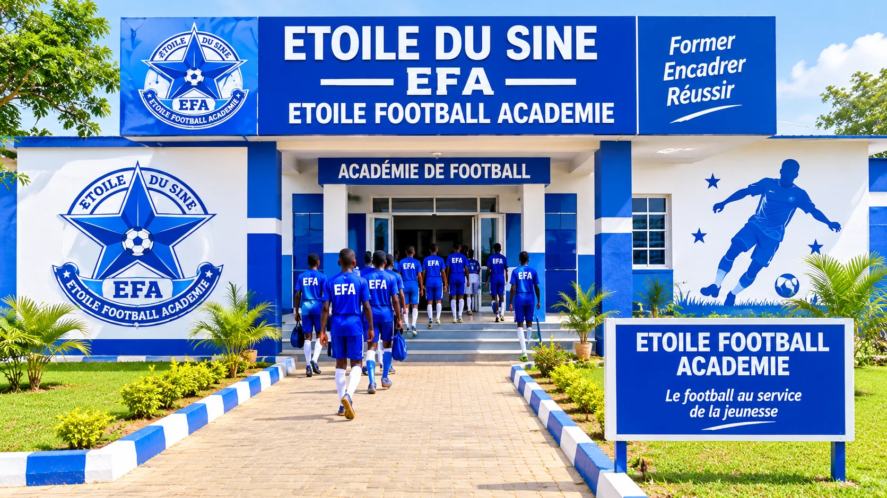

École de football
6–8 ansU7U9
Plaisir, motricité, jeux et découverte du ballon.

Former • Jouer • Réussir
Une académie de formation pour les jeunes de 6 à 18 ans, qui développe le footballeur, l'élève et le citoyen, et prépare les talents de demain pour l'élite du football sénégalais.
L'Étoile Football Académie (EFA) est une association sportive qui forme des jeunes footballeurs sur les plans sportif, scolaire et humain.
Notre mission : développer les qualités techniques, tactiques, physiques et mentales de chaque joueur selon son âge, garantir sa scolarité et le protéger, puis accompagner les meilleurs vers les clubs et structures de formation supérieures.
Former avant de gagner : la progression individuelle prime sur le résultat à court terme.
Plaisir, motricité, jeux et découverte du ballon.
Technique individuelle, coordination, esprit d'équipe.
Technique, tactique collective, première préparation physique.
Performance, tactique, préparation à la sélection et aux clubs professionnels.
Des coéquipiers, des adversaires, des arbitres, des encadrants et des règles.
Ponctualité, tenue, engagement aux entraînements comme aux études.
Progression continue, exigence de travail, recherche de qualité.
Entreprises, institutions, collectivités, diaspora : associez votre image à un projet structuré de formation sportive, scolaire et humaine, au bénéfice de 100 jeunes.